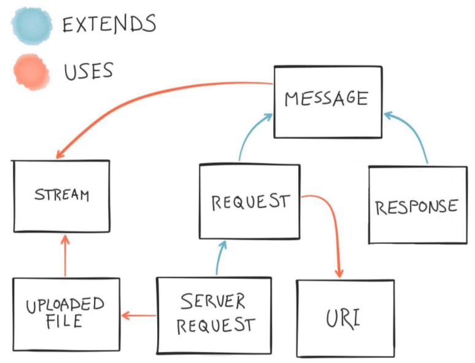

PSR-7 and Middleware
The Future of PHP
Terminology
- FIG Framework Interop Group
- PSR: PHP Standards Recommendation
- HTTP: HyperText Transport Protocol
- CGI: Common Gateway Interface
- SAPI: Server API
PSR-7
HTTP Message Interfaces
Why?
Because PHP Doesn't
POST
- Works for
application/x-www-form-urlencodedandform/multipartonly… - and only when submitted via POST.
HTTP Request Headers
- Available as
$_SERVERvariables… - but not all under the same prefix…
- and using a non-intuitive normalization.
Request URI
- Canonical source varies based on SAPI…
- and full URI requires investigating up to 9 CGI/SAPI variables!
File Uploads
- PHP only automatically handles them on POST requests.
- And has a few funky issues with arrays of file uploads…
File uploads (continued)
Given $files[0] and $files[1], you would
expect:
[
'files' => [
0 => [
'name' => 'file0.txt',
'type' => 'text/plain',
/* etc. */
],
1 => [
'name' => 'file1.html',
'type' => 'text/html',
/* etc. */
],
],
];
File uploads (still)
But PHP gives you:
[
'files' => [
'name' => [
0 => 'file0.txt',
1 => 'file1.html',
],
'type' => [
0 => 'text/plain,
1 => 'text/html',
],
/* etc. */
],
];
Streams
- PHP abstracts both input and output as streams
- but actively makes dealing with those streams difficult.
Abstractions
Every framework creates their own
- Zend Framework
- Symfony
- Aura
Even client applications!
- Guzzle
- Buzz
- Requests
- Zend\Http\Client
Too many abstractions
==
Babel
HTTP Message abstractions should be a commodity
Requests have a specification
POST /path HTTP/1.1
Host: example.com
Accept: text/html
Message body
Responses have a specification
HTTP/1.1 200 OK
Content-Type: text/html
Success!
PSR-7: A history
Benjamin Eberlei
HTTP Client interfaces
March 2012
Chris Wilkinson
HTTP Message Interfaces
December 2012
Michael Dowling
HTTP Mesage Interfaces: Draft
January 2014
Michael Dowling
HTTP Mesage Interfaces: Redacted
August 2014
Matthew Weier O'Phinney
HTTP Mesage Interfaces: Draft
September 2014
Additions to interfaces
ServerRequestInterfaceto handle:- PHP superglobal-type request parameters
- common concerns such as routing parameters
- message body parameter abstraction
UriInterfaceto model the URI.UploadedFileInterfaceto model file uploads.- Immutable value objects
Relationships

Acceptance: 18 May 2015
Examples
All Messages
$headerValues = $message->getHeader('Cookie'); // array!
$headerLine = $message->getHeaderLine('Accept'); // string!
$headers = $message->getHeaders(); // string => array pairs
$body = $message->getBody(); // StreamInterface
$message = $message->withHeader('Foo', 'Bar');
$message = $message->withBody($stream);
RequestInterface — Clients
$body = new Stream();
$stream->write('{"foo":"bar"}');
$request = (new Request())
->withMethod('GET')
->withUri(new Uri('https://api.example.com/'))
->withHeader('Accept', 'application/json')
->withBody($stream);
UriInterface
$scheme = $uri->getScheme();
$userInfo = $uri->getUserInfo();
$host = $uri->getHost();
$port = $uri->getPort();
$path = $uri->getPath();
$query = $uri->getQuery();
$fragment = $uri->getFragment();
$uri = $uri->withHost('example.com');
ResponseInterface — Clients
$status = $response->getStatusCode();
$reason = $response->getReasonPhrase();
$contentType = $response->getHeader('Content-Type');
$data = json_decode((string) $response->getBody());
ServerRequestInterface
$request = ServerRequestFactory::fromGlobals();
$method = $request->getMethod();
$path = $request->getUri()->getPath();
$accept = $request->getHeaderLine('Accept');
$data = json_decode((string) $request->getBody());
// $request = $request->withParsedBody($data);
// $params = $request->getParsedBody();
$query = $request->getQueryParams();
$cookies = $request->getCookieParams();
$files = $request->getUploadedFiles();
ServerRequestInterface — Attributes
Problem: how do we represent parameters matched by routing?
foreach ($matchedParams as $key => $value) {
$request = $request->withAttribute($key, $value);
}
// Later:
$id = $request->getAttribute('id', 1);
Uploaded Files
$size = $file->getSize();
$error = $file->getError(); // PHP file upload error constant
$name = $file->getClientFilename();
$type = $file->getClientMediaType();
$stream = $file->getStream(); // StreamInterface!
$file->moveTo($targetPath);
ResponseInterface
$body = new Stream();
$stream->write(json_encode(['foo' => 'bar']));
$response = (new Response())
->withStatus(200, 'OK!')
->withHeader('Accept', 'application/json')
->withBody($stream);
PSR-7 in a nutshell
Uniform access to HTTP messages
Middleware
Middle what?

Common Styles
Lambda
function (ServerRequestInterface $request) : Response
Common Styles
Injected Response
function (
ServerRequestInterface $request,
ResponseInterface $response
) : ResponseInterface
Q: How do you accomplish complex behavior?
A: By composing middleware.
class ClacksOverhead
{
public function __construct(callable $app) {
$this->app = $app;
}
public function __invoke($request, $response) {
$response = $this->app->__invoke($request, $response);
return $response->withHeader(
'X-Clacks-Overhead',
'GNU Terry Pratchett'
);
}
}
Common Styles
Injected "Next" Middleware
function (
ServerRequestInterface $request,
ResponseInterface $response,
callable $next
) : ResponseInterface
Invoking the "Next" middleware
// route the request
// and now inject it:
foreach ($matches as $key => $value) {
$request = $request->withAttribute($key, $value);
}
return $next(
$request,
$response->withHeader(
'X-Clacks-Overhead',
'GNU Terry Pratchett'
)
);
Why is middleware important?
An end to framework silos
Make frameworks consume middleware
class ContactController
{
private $contact;
public function __construct(Contact $contact)
{
$this->contact = $contact;
}
public function dispatch(Request $req, Response $res)
{
return call_user_func($this->contact, $req, $res);
}
}
Wrap frameworks in middleware
$app->pipe(function ($req, $res, $next) {
$framework = bootstrap_framework();
$response = $framework->run(
convertRequestToFramework($req),
convertResponseToFramework($res),
);
return convertFrameworkResponse($response);
});
The future of HTTP in PHP is collaborative
The future of HTTP in PHP is now!
Resources
- https://mwop.net/blog/tag/http (PSR-7 articles)
- http://www.php-fig.org/psr/psr-7/
- http://www.php-fig.org/psr/psr-7/meta/
- https://github.com/zendframework/zend-diactoros for an implementation
- https://github.com/zendframework/zend-expressive, a framework-agnostic PSR-7 middleware microframework
- Slim v3 is built on PSR-7
- and the latest versions of Symfony support it too!